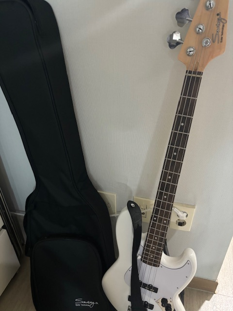

대학에 들어와서는 오히려 고등학생때보다 더욱 열심히 살아왔던 것 같습니다.
저는 사실 처음부터 소프트웨어학부였던 것은 아니고 1학년 동안은 간호학과 학생으로서 학교를 다녔습니다.

1학기 중반에 제가 간호학보다는 컴퓨터쪽에 더 흥미가 있다는 생각이 들어 전과를 하기 위해 정말 열심히 노력했습니다.

전과를 하기 위해서는 높은 성적이 필수였기 때문에 하나라도 A 이하를 받을 수도 있다는 생각이 들면 매우 불안해하기도 했습니다.
하지만 그런 불안감 덕분인지 1학기 2학기 통들어서 1학년 성적을 4.41이라는 성적으로 마무리할 수 있었습니다.
그렇게 전과에 성공하게 되었고 고등학생 때 대학 입시의 실패로 인해 희미해졌던 무슨 일이든 노력하면 이뤄낼 수 있다는 가치관이 뚜렷해졌습니다.
스스로에 대한 자신감을 키워낼 수 있었고 저 스스로가 성공할 수 있는 사람이라는 생각을 가지게 되었습니다.

이후에는 스스로에게 많은 경험이 필요함을 느끼게 되었습니다.
지난 2년 동안은 봉사활동을 하면서 새로운 경험을 쌓기 위해 노력했습니다.
이번 년도 5월부터는 밴드부에 들어가 악기를 연주하면서 새로운 취미를 발견하기도 했습니다.

한 번 흥미를 붙이거나 관심을 가지게 되면 그것이 달성될 때까지 노력하는 성격이기에 5시간 넘게 연습을 했던 적도 있습니다.

지난 여름방학에는 선배와 동기들과 함께 스터디를 하면서 직접 웹페이지를 제작해보기도 했습니다.
대학에 입학한 이후로는 새롭게 가지게 된 꿈을 이루기 위한 자기계발에 매진하였습니다.